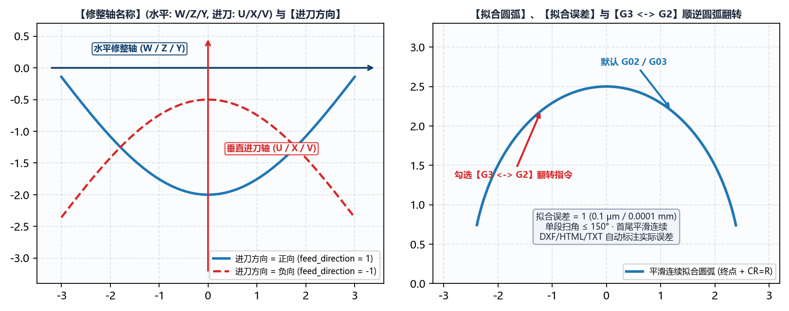

3.3 程序模式与修整轴
在 高级参数 -> 程序信息 中配置宏程序注释头、数控 程序模式，以及修整水平轴、进刀轴名称和切入极性。
程序头配置
程序头信息：支持多行备注（图号、批次、砂轮粒度等），生成时自动添加对应数控系统注释前缀（Siemens;、Fanuc(...)、Syntec//）；程序头加载齿形信息（否/是）：设为是时自动将全部主参数、补偿量及*-info.txt几何摘要写入代码头部，方便机台核对。
14 种程序模式对照
IGD 共内置 14 种 程序模式，覆盖 Siemens、Fanuc、Syntec（新代） 及单直径纯 DXF 模式（模式-10 / 模式-99）：
程序模式 |
数控系统与文件后缀 | 默认直径变量 | 默认轴名 (水平/进刀) |
默认 进刀方向 |
特征与适用场景 |
|---|---|---|---|---|---|
模式-0 |
Siemens (.SPF/.CPF) |
DRESSER[24] |
W / U (可改) |
负向 (可改) |
标准通用模板（DRESSER[44] 修整侧、DRESSER[40] 读信息），适用于内/外螺纹磨床 |
模式-1 |
Siemens (.SPF/.CPF) |
_OVR[167] |
Y / X (固定) |
负向 (固定) |
含完整换刀与修整头尾循环，默认勾选 G3 ⇆ G2，常用于转子与外成形磨床 |
模式-2 |
Siemens (.SPF/.CPF) |
DRESSER[1] |
W / X (固定) |
负向 (固定) |
西门子专用模板 A（DRESSER[43] 读取参数） |
模式-3 |
Siemens (.SPF/.CPF) |
REPAIR[8] |
Y / X (固定) |
负向 (固定) |
西门子专用模板 B（REPAIR[8] 实时砂轮直径） |
模式-4 |
Siemens (.SPF/.CPF) |
R9 |
W / V (固定) |
负向 (固定) |
R 参数多道修整循环模板（含 STRIM / RECALVAR / TRIMEND） |
模式-5 |
Fanuc (O2010) |
#603 (#550=#603) |
Z / X (固定) |
正向 (固定) |
发那科标准模板 A（IF[#550 GE ...] GOTO 阶梯分支） |
模式-6 |
Syntec (O2010.txt) |
#340 (#350:=#340) |
Y / X (固定) |
负向 (固定) |
新代宏模板（含 %@MACRO 与 := 赋值语法） |
模式-7 |
Fanuc (O2010) |
#603 (#550=#603) |
Z / X (固定) |
正向 (固定) |
发那科标准模板 B（带 #122=100 行号步进规范） |
模式-8 |
Siemens (.SPF/.CPF) |
R40 |
W / V (固定) |
负向 (固定) |
西门子双滚轮定位模板（含 R52~R55 基准偏移） |
模式-9 |
Fanuc (O2010) |
#603 |
Z / X (固定) |
负向 (固定) |
默认勾选 G3 ⇆ G2，X 轴采用直径编程模式（×2），支持进给率变量 #604 |
模式-10 |
仅输出 DXF (.dxf) |
自动隐藏 | 自动隐藏 | 自动隐藏 | 单直径纯 DXF 极简模式：锁定最小直径与 砂轮直径间隔，关闭圆弧拟合、G3 ⇆ G2、加密与代码头部加载，仅导出单直径全套 DXF |
模式-98 |
Fanuc 自定义 (O2010) |
#603 (可改) |
Z / X (可改) |
正向 (可改) |
发那科全开放自定义模式，自由定义变量、轴名与进刀极性 |
模式-99 |
仅输出 DXF (.dxf) |
自动隐藏 | 自动隐藏 | 自动隐藏 | 单直径纯 DXF 完整模式：锁定最小直径与 砂轮直径间隔，不生成 G 代码，保留圆弧拟合结果 DXF（dxf_dress_wheel_curve_*.dxf、dxf_dress_contour_curve_*.dxf）供检图/CAM 使用 |
模式-100 |
Siemens 自定义 (.SPF/.CPF) |
DRESSER[24] (可改) |
W / U (可改) |
负向 (可改) |
西门子全开放自定义模式，自由修改变量、轴名与极性 |
修整轴名称与进刀极性

- 允许自定义模式：
模式-0、模式-98、模式-100； 修整轴名称：水平:沿砂轮轴线方向轴（常见W、Z、Y）；进刀:沿砂轮径向切入轴（常见U、V、X）；
进刀方向：负向：切入砂轮时进刀坐标减小（常规后置修整器）；正向：切入砂轮时进刀坐标增大（常见前置修整器）；
- 极性影响：修改
进刀方向会同步反转进刀坐标、圆弧圆心（I/J/K或CR=）符号及部分圆弧顺逆方向，更换机床模板后务必在模拟计算视图和机床空跑画面中二次确认。